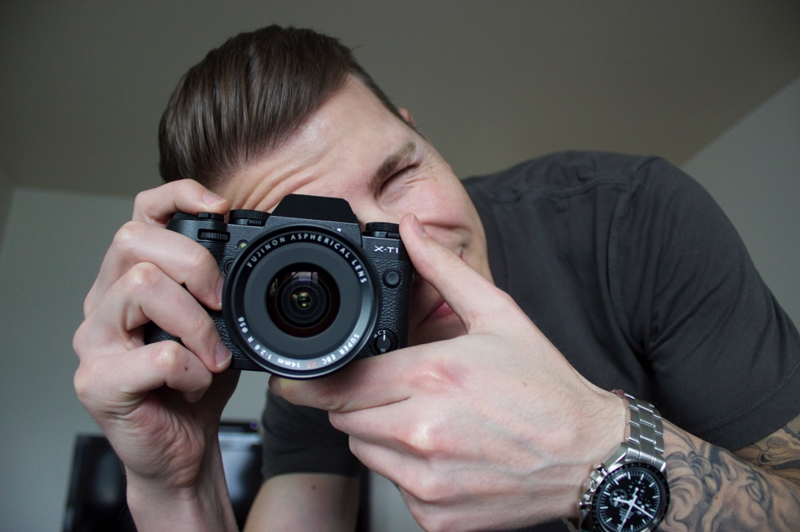

Hi there. My name is John Doe. I'm a photographer.
I like to focus on sports, people, the outdoors, and reportage photography. For the last twenty years, I've travelled extensively, shooting stills and film for editorial and advertising clients worldwide. I also try to find the time to work on personal projects. I am based in Bellingham, where I live with my wife and our two children. For me, life and photography are parallel beings. My fascination with the world around me, as well as the people around me, is mirrored in my own perfectionist approach, as well as in the attention to detail in his photography.
